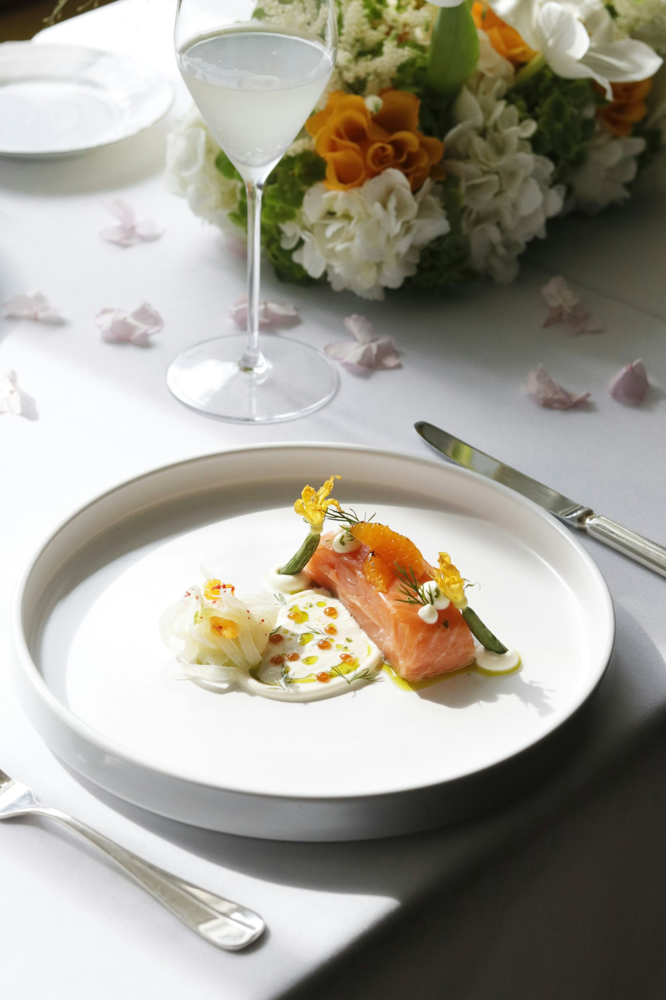
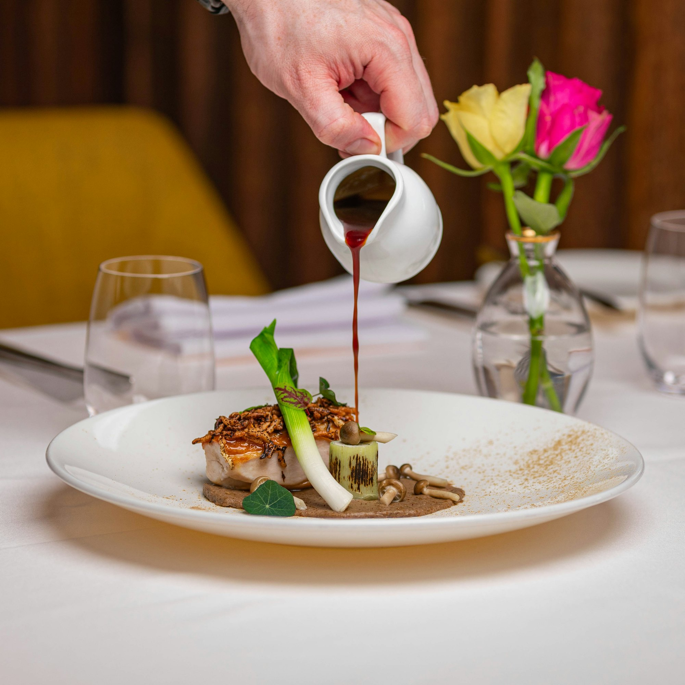
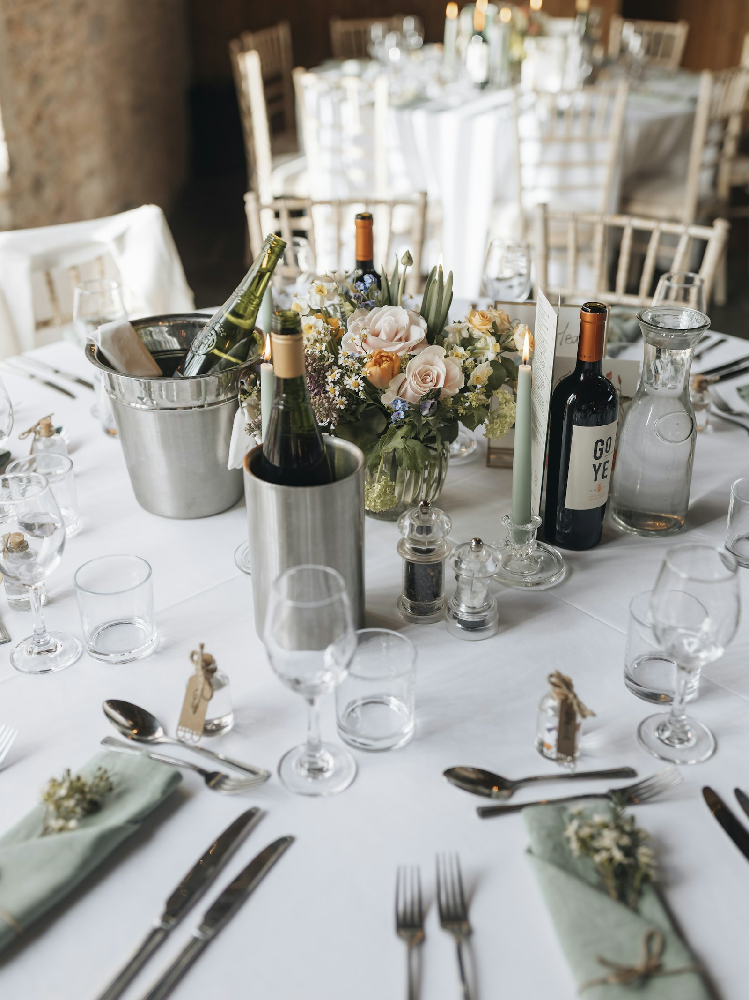

ランチ・ディナー
季節の食材を活かした「フランコジャポネ」のコースを。

French Restaurant & Wedding 神楽坂
産地直送の魚介や有機野菜を、芳醇なソースとともに。「フランコジャポネ」の一皿と、レストランウエディングを。
French Restaurant & Wedding 神楽坂
産地直送の魚介や有機野菜を、芳醇なソースとともに。「フランコジャポネ」の一皿と、レストランウエディングを。
L'Alliance
ラリアンスは、フランス語で「調和」「協力」、そして「結婚指輪」。
3Dのイメージです
店名の「ラリアンス」は、調和、協力、そして結婚指輪を意味するフランス語に由来します。木や石、ガラスといった自然の素材に囲まれた空間で、大切な人と特別なひとときを。
雑誌『家庭画報』2024年2月号でも、創業20周年を迎えたラリアンスが紹介されました。

季節の食材を活かした「フランコジャポネ」のコースを。

料理を大切にしたいおふたりのための結婚式。
親友や恋人と、記念日を一生の思い出に。
| ランチ | 〜15:00（ラストオーダー 13:00） |
|---|---|
| ディナー | 17:30〜22:00（ラストオーダー 20:00） |
| 席数 | 68席 |
記念日のご予約や、レストランウエディングのご見学も、お電話かメールでどうぞ。